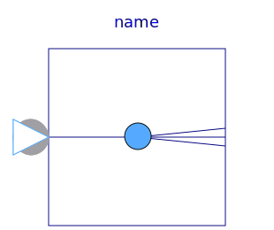

.
Modelica
.
ComplexBlocks
.
Routing
.
Replicator
Information
This block replicates the input signal to an array of
nout
identical output signals.
Generated at 2018-10-20T17:02:17Z by
OpenModelica 1.13.0~dev-1491-g87333c1